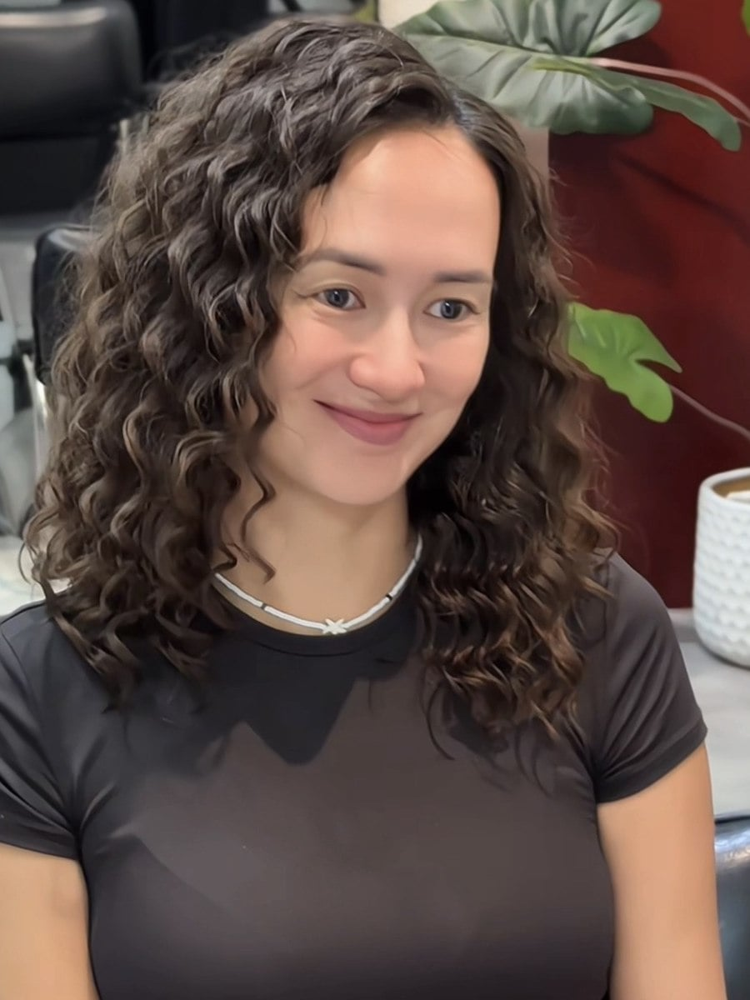

Góc chăm tóc
Chăm sóc tóc sau khi uốn: 7 điều cần nhớ
Một lọn uốn đẹp ở salon chỉ là một nửa câu chuyện. Nửa còn lại nằm ở cách bạn chăm tóc trong những tuần đầu. Đây là 7 điều tụi mình luôn dặn khách trước khi rời ghế.

1. Đợi 48 giờ rồi mới gội
Sau khi uốn, liên kết trong sợi tóc cần thêm thời gian để "khóa" nếp. Gội quá sớm dễ làm lọn uốn duỗi ra và nhanh mất dáng. Nếu tóc bết, bạn có thể dùng khăn ẩm lau nhẹ chân tóc thay vì gội.
2. Dùng dầu gội dịu nhẹ, không sulfate
Sulfate làm sạch mạnh nhưng cũng cuốn đi độ ẩm, khiến tóc uốn khô và xù. Chọn dầu gội dịu nhẹ, chỉ tập trung gội phần chân tóc, để bọt tự chảy xuống ngọn.
3. Luôn dùng dầu xả và kem dưỡng giữ lọn
- Dầu xả: thoa từ giữa thân đến ngọn tóc, để 2–3 phút rồi xả bằng nước mát.
- Kem hoặc xịt dưỡng giữ lọn: thoa khi tóc còn ẩm, dùng tay vò nhẹ từ ngọn lên để lọn uốn bung đều.
4. Thấm khô, đừng chà xát
Chà khăn mạnh làm lọn uốn rối và xù. Hãy quấn tóc trong khăn mềm hoặc áo thun cotton, ép nhẹ để thấm nước.
5. Sấy ở nhiệt độ vừa, có đầu khuếch tán
Đầu khuếch tán (diffuser) giúp gió tỏa đều, giữ lọn tròn và bồng. Để máy ở mức nhiệt vừa, hướng gió từ dưới lên, không sấy sát da đầu.
6. Ngủ trên vỏ gối lụa hoặc buộc lỏng
Vỏ gối lụa giảm ma sát nên tóc ít rối khi thức dậy. Nếu tóc dài, bạn có thể buộc lỏng phía đỉnh đầu để lọn uốn không bị đè bẹp.
7. Hấp dầu định kỳ
Tóc uốn cần được bổ sung độ ẩm thường xuyên hơn tóc thẳng. Một buổi hấp dầu mỗi 3–4 tuần giúp lọn uốn mềm, bóng và giữ nếp lâu hơn.